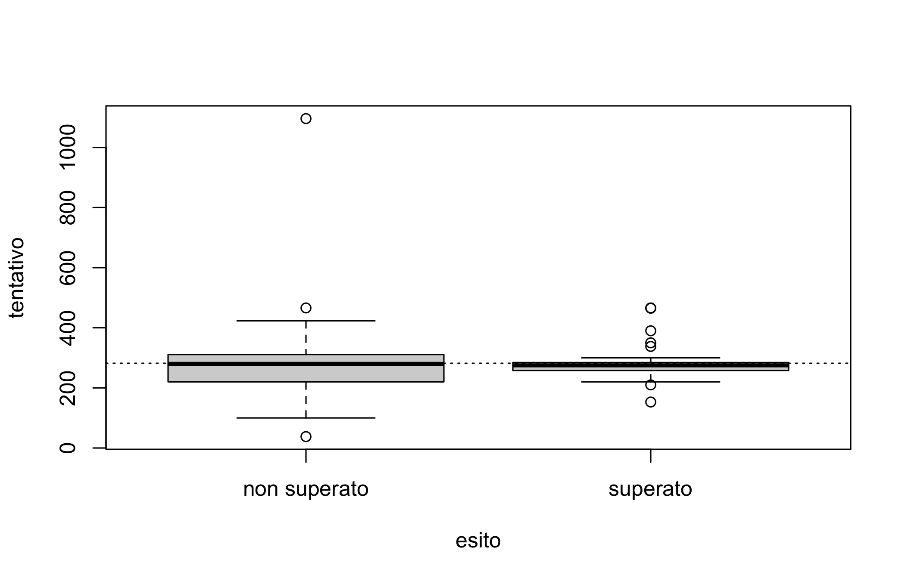

Soluzione esame del 12 Novembre 2026
Statistics III - CdL SSE
Homepage
Parte I: analisi dei dati
Anzitutto, era necessario caricare in memoria il dataset.
non superato superato
0 14 30
1 18 13 0 1
0.6818182 0.4193548 Tra gli studenti che commettono un errore grave la proporzione di promossi è 13/31 = 0.419, contro 30/44 = 0.682 tra chi non lo commette: commettere un errore grave è quindi associato a una minore probabilità di superare l’esame.

Le mediane dei due gruppi sono entrambe vicine al valore vero (275 per i promossi, 280 per i respinti). La differenza tra i due gruppi riguarda soprattutto la variabilità: le stime dei promossi sono concentrate attorno a 282, mentre quelle dei respinti sono molto più disperse, con valori estremi sia bassi sia molto alti (fino a 1096). Ciò che conta è quindi la distanza dal valore vero, non la direzione dell’errore.
La variabile risposta Y_i (superato) è binaria, pertanto era ragionevole modellarla tramite una distribuzione di Bernoulli, in cui:
Y_i \overset{\text{ind}}{\sim} \text{Bernoulli}(\pi_i), \quad (\text{componente casuale}), \qquad \log\left(\frac{\pi_i}{1 - \pi_i}\right) = \beta_1 + \beta_2 x_i \quad (\text{componente sistematica}),
per i = 1, \dots, 75, dove x_i rappresenta la i-esima osservazione di errore_grave. La funzione legame è g(\pi) = \text{logit}(\pi) = \log\{\pi/(1 - \pi)\}, il legame canonico.
1 2
0.6818182 0.4193548 Le probabilità stimate, pari a 0.682 e 0.419, coincidono con le proporzioni osservate al punto (a). Il motivo è che il modello ha due parametri e la variabile esplicativa individua due soli gruppi: il modello è quindi saturo rispetto ai gruppi, e le equazioni di verosimiglianza impongono che in ciascun gruppo il numero stimato di promossi coincida con quello osservato.
# Punto (b.iii)
m0 <- glm(superato ~ 1, data = biglie, family = binomial)
lmtest::waldtest(m0, m1, test = "Chisq") # Test di Wald
anova(m0, m1, test = "Rao") # Test di Rao
anova(m0, m1, test = "LRT") # Test log-rapporto di verosimiglianza
chisq.test(table(biglie$errore_grave, biglie$esito), correct = FALSE) # Test X^2 di PearsonPer confrontare m1 con il modello nullo, il sistema d’ipotesi è H_0: \beta_2 = 0 contro H_1: \beta_2 \neq 0. I valori delle statistiche test sono pari a W_e = 4.99 (Wald), W_u = 5.12 (Rao/score) e W = 5.14 / \phi = 5.14 (log-rapporto di verosimiglianza), poiché \phi = 1 nel modello binomiale. Nel caso del test di Wald, era ugualmente corretto riportare la statistica z value presente nel summary, pari a -2.233, il cui quadrato coincide con W_e. I gradi di libertà sono q = 1, perché è uno solo il parametro coinvolto nel sistema d’ipotesi. Sotto H_0 le tre statistiche hanno distribuzione asintotica \chi^2_1, da cui p-value pari a 0.026, 0.024 e 0.023: al livello del 5\% si rigetta l’ipotesi nulla.
La statistica di Rao coincide con il test X^2 di Pearson per l’indipendenza nella tabella 2 \times 2 del punto (a): entrambe valgono 5.12, con lo stesso p-value. Si tratta di un risultato generale: il test di Rao per \beta_2 = 0 in una regressione logistica con una sola esplicativa binaria è il test X^2 di Pearson.
Di default, il comando chisq.test applica la correzione di continuità di Yates, ottenendo 4.10 (p-value 0.043). L’uguaglianza con il test di Rao vale per la statistica senza correzione, che si ottiene con l’opzione correct = FALSE.
(Intercept)
0.2954642 (Intercept)
0.5733333 Nel modello nullo tutti gli studenti hanno la stessa probabilità di superare l’esame, la cui stima è la proporzione di promossi 43/75 = 0.573. L’intercetta stimata è quindi il logit di tale proporzione, ossia \hat{\beta}_1 = \log(43/32) = 0.296. In altri termini, le quote di superamento stimate sono e^{0.296} = 1.34: circa 4 promossi ogni 3 respinti.
errore_grave
0.337037 2.5 % 97.5 %
0.1297418 0.8755385 Il rapporto tra quote (odds ratio) associato a errore_grave è e^{\hat{\beta}_2} = 0.337: le quote di superamento dell’esame di chi commette un errore grave sono circa il 34\% di quelle di chi non lo commette, ossia ridotte di circa il 66\%. L’intervallo di confidenza di livello 0.95 per il rapporto tra quote è (0.130, 0.876), che non contiene il valore 1, coerentemente con il test di Wald.
Il rapporto tra quote stimato coincide con quello empirico della tabella 2 \times 2, ossia (13 \times 14)/(18 \times 30) = 0.337.
Nel modello m2 il predittore lineare stimato è \hat{\beta}_1 + \hat{\beta}_2 x_i = 0.747 - 0.0093 x_i, dove x_i è l’errore assoluto dell’i-esimo studente. Per interpretare il coefficiente di errore, si osservi che un aumento dell’errore di 10 biglie moltiplica le quote di superamento dell’esame per
e^{10 \hat{\beta}_2} = 0.911,
cioè le riduce di circa il 9\%. Il coefficiente è significativo al 5\% secondo il test di Wald, ma con un p-value (0.048) molto vicino alla soglia.
Nel modello m3 le stime di entrambi i coefficienti si riducono in valore assoluto (-0.600 per errore_grave e -0.0053 per errore), gli errori standard aumentano e nessuno dei due test di Wald è significativo (p-value pari a 0.38 e 0.37).
Nessuno dei due coefficienti è significativo in m3 a causa della forte dipendenza tra le due variabili esplicative: errore_grave è una funzione deterministica di errore, dato che vale 1 se e solo se l’errore supera 30 biglie. Le due variabili contengono quindi in larga parte la stessa informazione (collinearità). In m3 ciascun coefficiente misura l’effetto di una variabile a parità dell’altra, e i dati contengono poca informazione per separare i due effetti.
Non è possibile confrontare m1 e m2 mediante un test del log-rapporto di verosimiglianza, perché i due modelli non sono annidati: nessuno dei due si ottiene dall’altro imponendo dei vincoli sui parametri. Entrambi sono invece annidati nel modello m3.
Per scegliere tra m1, m2 e m3, si confronta anzitutto m3 con i due modelli in esso annidati mediante il test del log-rapporto di verosimiglianza. Si ottiene W = 97.21 - 95.66 = 1.55 per m1 contro m3 e W = 96.36 - 95.66 = 0.71 per m2 contro m3, con q = 1 grado di libertà e p-value pari a 0.21 e 0.40. In entrambi i casi non si rigetta l’ipotesi nulla: il modello m3 non è preferibile.
Il confronto tra m1 e m2 richiede invece i criteri d’informazione:
| Modello | AIC | BIC |
|---|---|---|
m1 |
101.21 | 105.84 |
m2 |
100.36 | 105.00 |
m3 |
101.66 | 108.61 |
Entrambi i criteri selezionano il modello m2, anche se la differenza con m1 è piccola. Il modello m2 ha inoltre il vantaggio di non dipendere dalla scelta arbitraria della soglia di 30 biglie.
errore_grave promossi respinti
1 0 30 14
2 1 13 18 Estimate Std. Error z value Pr(>|z|)
(Intercept) 0.7621401 0.3236693 2.354687 0.01853830
errore_grave -1.0875625 0.4870734 -2.232851 0.02555875 Estimate Std. Error z value Pr(>|z|)
(Intercept) 0.7621401 0.3236694 2.354686 0.01853834
errore_grave -1.0875625 0.4870734 -2.232851 0.02555877[1] 97.20838 0.00000Ri-stimando m1 sui dati raggruppati, le stime e gli errori standard sono identici a quelli del punto (b), poiché le due log-verosimiglianze differiscono solo per una costante che non dipende dai parametri. Le devianze residue sono invece diverse: 97.21 sui dati non raggruppati e 0, con 0 gradi di libertà, sui dati raggruppati. Con due gruppi e due parametri, infatti, il modello stimato sui dati raggruppati coincide con il modello saturo.
Usando la devianza residua del modello stimato sui dati raggruppati non è quindi possibile verificare la presenza di sovradispersione, perché la devianza è nulla e non ci sono gradi di libertà residui.
Del resto, con i dati non raggruppati la sovradispersione non può nemmeno verificarsi: quando m_i = 1, qualsiasi distribuzione su \{0, 1\} ha varianza \pi_i(1 - \pi_i), per cui necessariamente \phi = 1.